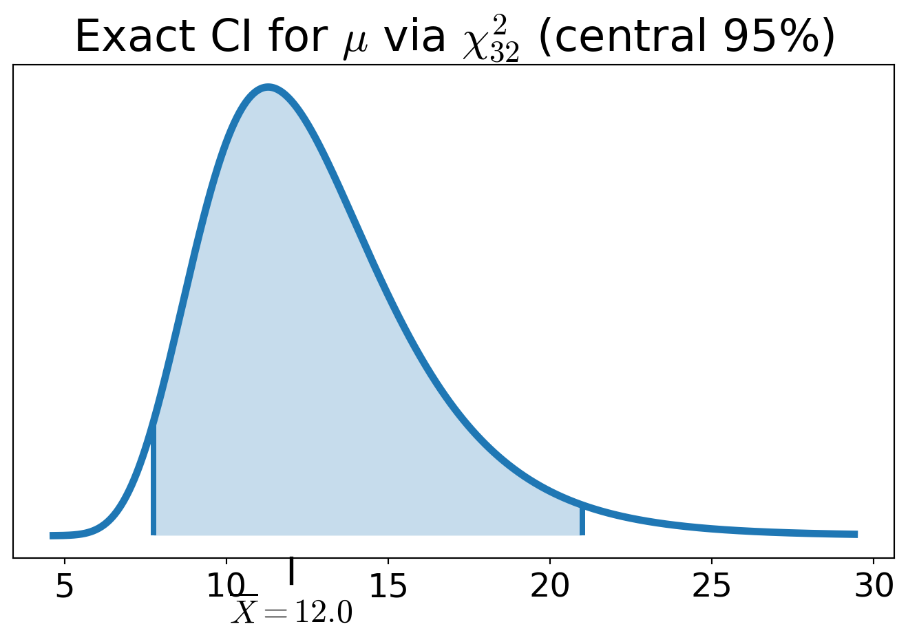
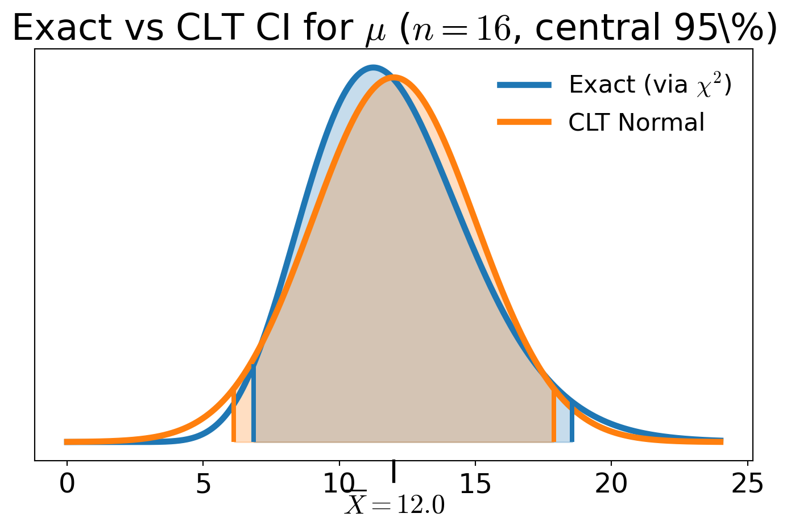
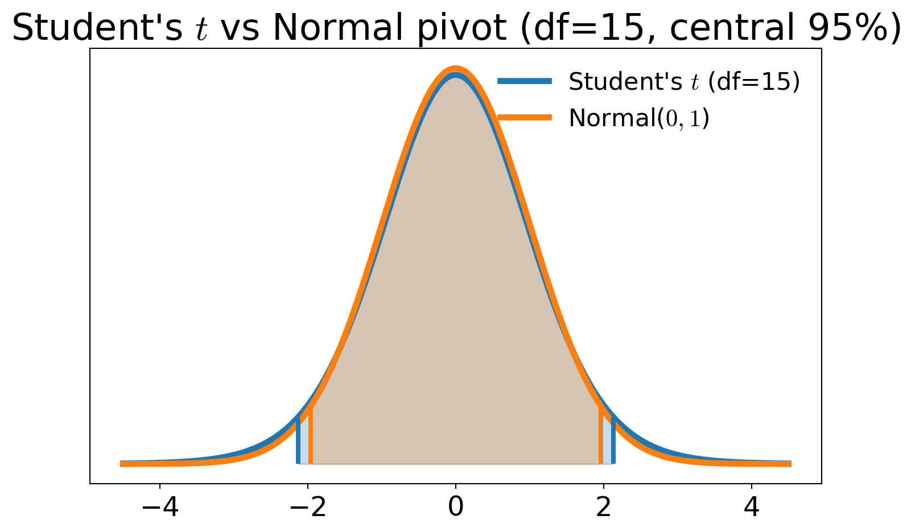

Confidence Intervals
If
\(\theta\) is a parameter of interest of a distribution, and
\(X_1, \ldots, X_n\) are data that we assume are collected from that distribution,
then we try to construct random quantities \(\Theta_L\) and/or \(\Theta_U\), depending only on the data (and not on \(\theta\)), that give intervals which capture \(\theta\) with high probability \(1-\alpha\). Depending on the situation, this means constructing
a two-sided interval with \(\Prob(\Theta_L \le \theta \le \Theta_U) \ge 1-\alpha\), or
a one-sided lower interval with \(\Prob(\Theta_L \le \theta) \ge 1-\alpha\), or
a one-sided upper interval with \(\Prob(\theta \le \Theta_U) \ge 1-\alpha\)
The bounds \(\Theta_L\) and \(\Theta_U\) are random because they depend on random data. Here \(\alpha\) is our willingness to be wrong, typically \(\alpha = 5\%\).
- In many continuous cases, the probability is exactly \(1-\alpha\)
- For discrete distributions, the probability is often slightly larger than \(1-\alpha\)
- Critical value notation
- Large sample size confidence intervals for means
- Small sample size confidence intervals for means when the distribution is known
- Confidence intervals for means of differences
- Confidence intervals for proportions
- Confidence intervals for variances
- Bootstrap confidence intervals
- Summary of common confidence intervals and their assumptions
Upper critical values
For a distribution with CDF \(F\) and quantile function \(Q\), define the upper critical value \[ c_{\alpha} := Q(1-\alpha), \quad \text{i.e., } F(c_{\alpha}) \ge 1-\alpha \text{ and } F(c_{\alpha} - \epsilon) < 1-\alpha \; \forall \epsilon > 0 \]
Examples
- \(z_{\alpha} = Q_{\Norm(0,1)}(1-\alpha)\)
- \(t_{\nu,\alpha} = Q_{t_\nu}(1-\alpha)\)
- \(\chi^2_{\nu,\alpha} = Q_{\chi^2_\nu}(1-\alpha)\)
These upper critical values are not \(\alpha\)-quantiles.
Large sample size confidence intervals for means
If \(X_1, \ldots, X_n\) are IID with mean \(\mu\) and variance \(\sigma^2 < \infty\), and \(\barX_n\) is the sample mean, then by the Central Limit Theorem \[ \frac{\barX_n - \mu}{\sigma/\sqrt{n}} \appxsim \Norm(0,1) \quad \text{for large } n \] Letting \(z_{\alpha/2}\) be the upper \(\alpha/2\) quantile of \(\Norm(0,1)\), i.e., \(z_{\alpha/2} = Q_{\Norm(0,1)}(1 - \alpha/2)\), then \[\begin{align*} 1 - \alpha & \approx \Prob \biggl( -z_{\alpha/2} \le \frac{\barX_n - \mu}{\sigma/\sqrt{n}} \le z_{\alpha/2} \biggr) \\ & \approx \Prob \biggl( \barX_n - z_{\alpha/2} \frac{\sigma}{\sqrt{n}} \le \mu \le \barX_n + z_{\alpha/2} \frac{\sigma}{\sqrt{n}} \biggr) \\ & \approx \Prob \biggl( \underbrace{\barX_n - z_{\alpha/2} \frac{S_n}{\sqrt{n}}}_{\Theta_L} \le \mu \le \underbrace{\barX_n + z_{\alpha/2} \frac{S_n}{\sqrt{n}}}_{\Theta_U} \biggr) \end{align*}\] where \(S_n^2\) is some estimate of the unknown population variance \(\sigma^2\) (e.g., unbiased or MLE)
See the Approval Ratings example for an illustration of this construction for a Bernoulli mean
Example: You observe \(\barX_n = 12.0\) minutes for taxis to arrive.You construct a \(95\%\) confidence interval for the mean arrival time, \(\mu\), assuming that the arrival times are distributed \(\Exp(1/\mu)\). Recall that \(\mu = \sigma = 1/\lambda\).
| \(n\) | CLT CI for \(\mu\) (\(S=\barX_{n}\)) | CI width |
|---|---|---|
| 16 | \([6.12,\,17.88]\) | 11.760 |
| 400 | \([10.82,\,13.18]\) | 2.352 |
Small sample size confidence intervals for means when the distribution is known
If the sample size is not large enough for the Central Limit Theorem to apply, but the sample mean has a known distribution, then exact confidence intervals can sometimes be constructed
Confidence interval for the mean of an exponential distribution
You observe \(\barX_n = 12.0\) minutes for taxis to arrive.based on \(n\) observations. You construct a \(95\%\) confidence interval for the mean arrival time, \(\mu\), assuming that the arrival times are distributed \(\Exp(1/\mu)\). Recall that \(\mu = \sigma = 1/\lambda\).
But now we have the true distribution of \(\barX_n\):
\[\begin{align*} 2 \lambda n \barX_n &\sim \chi^2_{2n} \\ \implies 1 - \alpha &= \Prob \biggl( \chi^2_{2n, \alpha/2} \le 2 \lambda n \barX_n \le \chi^2_{2n, 1-\alpha/2} \biggr) \\ &= \Prob \biggl( \frac{\chi^2_{2n, \alpha/2}}{2 n \barX_n} \le \lambda \le \frac{\chi^2_{2n, 1-\alpha/2}}{2 n \barX_n} \biggr) \\ &= \Prob \biggl( \frac{2 n \barX_n}{\chi^2_{2n, 1-\alpha/2}} \le \mu \le \frac{2 n \barX_n}{\chi^2_{2n, \alpha/2}} \biggr). \end{align*}\]

| \(n\) | Exact \(\chi^2\) CI | Exact CI width | CLT CI | CLT CI width | (CLT width/ Exact width) |
|---|---|---|---|---|---|
| 16 | \([7.76,\,20.99]\) | 13.234 | \([6.12,\,17.88]\) | 11.760 | 0.889 |
| 400 | \([10.91,\,13.27]\) | 2.363 | \([10.82,\,13.18]\) | 2.352 | 0.995 |
- For small \(n\)
- Exact confidence interval can be substantially different from the CLT-based interval
- CLT interval is symmetric about \(\bar X_n\), while the exact interval is not
- As \(n\) increases
- CLT-based interval approaches the exact interval

⬇ Exact vs CLT vs Bootstrap Confidence Interval Coverage 📓
CI for the mean of Normal data with unknown variance
If \(X_1, \ldots, X_n\) are IID \(\Norm(\mu, \sigma^2)\), then \(\displaystyle\frac{\barX_n - \mu}{S_n/\sqrt{n}} \sim t_{n-1}\) for all \(n \ge 2\), where \(S_n^2\) is the unbiased sample variance estimator. Letting \(t_{n-1,\alpha/2}\) be the upper \(\alpha/2\) quantile of \(t_{n-1}\), then
\[
\Prob \biggl( \barX_n - t_{n-1,\alpha/2} \frac{S_n}{\sqrt{n}} \le \mu \le \barX_n + t_{n-1,\alpha/2} \frac{S_n}{\sqrt{n}} \biggr) = 1 - \alpha
\]
Student’s \(t\) CIs are wider than CLT Normal CIs for small \(n\) because \(t_{n-1,\alpha/2} > z_{\alpha/2}\)
But they are exact and thus more accurate for all \(n \ge 2\) when the data are Normal

CI for a binomial proportion when no failures are observed
You draw \(n\) IID samples of your product to test for failure, and none of the samples fail. What is your confidence interval for \(p\), the probability that a product is satisfactory?
Let \(X_i = 1\) if the \(i\)th product is satisfactory and \(0\) otherwise. Note that \[\begin{gather*} X_i = \begin{cases} 1, & \text{satisfactory},\\ 0, & \text{failure}, \end{cases} \qquad X_i \sim \Bern(p), \quad p=\Prob(\text{satisfactory}), \\ T := \sum_{i=1}^n X_i \quad \text{(\# satisfactory)} \sim \Bin(n,p). \end{gather*}\]
Want a one-sided confidence interval for \(p\) of the form \([P_L,1]\); confidence in our product quality
\(P_L\) is a random variable, defined as a function of \(T\)
- If true success probability \(< P_L\), then observing \(\ge T\) successes is quite unlikely
We define a function \(p_{L,\alpha} : \{0,1,\ldots,n\} \to [0,1]\) implicitly by requiring that \[ \Prob_{\Bin(n,p_{L,\alpha}(t))}\bigl(T \ge t\bigr) = \alpha \qquad \forall t \in \{0,1,\ldots,n\} \] The random lower confidence limit is then \(P_L := p_{L,\alpha}(T)\)
\([P_L,1]\) takes the form \(P_L := p_{L,\alpha}(T)\), with \[ \Prob_{\Bin(n,p_{L,\alpha}(t))}\bigl(T \ge t\bigr) = \alpha \qquad \forall t \in \{0,1,\ldots,n\}. \] In our case the realized confidence interval based on \(n\) successes is \([p_{L,\alpha}(n),1]\), so \[ [p_{L,\alpha}(n)]^n = \Prob_{\Bin(n,p_{L,\alpha}(n))}\bigl(T \ge n\bigr) = \alpha \iff p_{L,\alpha}(n) = \alpha^{1/n} \]
| \(n\) | 5 | 10 | 20 | 100 |
|---|---|---|---|---|
| \(p_L = \alpha^{1/n}\) | 0.5493 | 0.7411 | 0.8609 | 0.9705 |
Confidence Intervals for Means of Differences
For paired or matched data (before/after, twins, same subject measured twice) \[ D_i = X_i - Y_i, \quad i = 1,\dots,n \]
Inference is about the mean difference \(\mu_D\) (paired setting)
Not difference of means \(\mu_X - \mu_Y\) (unpaired), even though \(\barD_n= \barX_n - \barY_n\)
If \(D_1,\dots,D_n \IIDsim \Norm(\mu_D, \sigma_D^2)\) \[ \Prob\left[ \barD_n - t_{n-1,\alpha/2}\frac{S_{D,n}}{\sqrt{n}} \le \mu_D \le \barD_n + t_{n-1,\alpha/2}\frac{S_{D,n}}{\sqrt{n}} \right] = 1 - \alpha \] where \(\displaystyle S_{D,n}^2 = \frac 1{n-1} \sum_{i=1}^n (D_i - \barD_n)^2\)
If \(D_1,\dots,D_n\) are IID with finite variance, and \(n\) is large \[ \Prob\left[ \barD_n - z_{\alpha/2}\frac{S_{D,n}}{\sqrt{n}} \le \mu_D \le \barD_n + z_{\alpha/2}\frac{S_{D,n}}{\sqrt{n}} \right] \approx 1 - \alpha \]
Confidence Intervals for Differences of Means
For two independent samples (control/treatment, two groups)
\[ X_1,\dots,X_{n_X} \sim \text{population 1}, \quad Y_1,\dots,Y_{n_Y} \sim \text{population 2} \]
with sample means \(\barX_{n_X}, \barY_{n_Y}\) and sample variances \(S_{X,n_X}^2, S_{Y,n_Y}^2\)
Pooled-\(t\) confidence interval (Wackerly)
Assume that the two populations:
- Are sampled independently
- Are Normal
- Have a common variance \(\sigma^2\)
Define the pooled variance estimator of \(\sigma^2\) as \[ S_p^2 = \frac{(n_X-1)S_{X,n_X}^2 + (n_Y-1)S_{Y,n_Y}^2}{n_X + n_Y - 2}. \]
Then a \(t\)-based confidence interval for \(\mu_X - \mu_Y\) is
\[\begin{multline*} \Prob\left[ (\barX_{n_X}-\barY_{n_Y}) - t_{n_X+n_Y-2,\alpha/2} \, S_p \sqrt{\frac{1}{n_X} + \frac{1}{n_Y}} \le \mu_X - \mu_Y \right . \\ \left . \le (\barX_{n_X}-\barY_{n_Y}) + t_{n_X+n_Y-2,\alpha/2} \, S_p \sqrt{\frac{1}{n_X} + \frac{1}{n_Y}} \right] = 1 - \alpha. \end{multline*}\]
Other variations exist (Welch two-sample \(t\), unequal variances).
CLT-based interval (large samples)
If \(n_X\) and \(n_Y\) are large and the samples are independent, then a CLT-based confidence interval applies even if the two populations:
- need not be Normal
- need not have a common variance
\[\begin{multline*} \Prob\left[ (\barX_{n_X}-\barY_{n_Y}) - z_{\alpha/2} \sqrt{\frac{S_{X,n_X}^2}{n_X}+\frac{S_{Y,n_Y}^2}{n_Y}} \le \mu_X - \mu_Y \right . \\ \left . \le (\barX_{n_X}-\barY_{n_Y}) + z_{\alpha/2} \sqrt{\frac{S_{X,n_X}^2}{n_X}+\frac{S_{Y,n_Y}^2}{n_Y}} \right] \approx 1 - \alpha. \end{multline*}\]
\(\exstar\) Exercises
- Let \(X_1,\dots,X_{100}\) and \(Y_1,\dots,Y_{100}\) be two samples with sample means \(\barX, \barY\) and sample standard deviations \(S_X, S_Y\), respectively
- Let \(D_i = X_i - Y_i\) and \(S_D\) be the sample standard deviation of the \(D_i\)
- You observe \(\barX = 85, \barY = 75, S_X = 10, S_Y = 12, S_D = 4\)
Construct the appropriate 95% confidence intervals for the following scenarios:
\(X_1,\dots,X_{100}\) are IID test scores from a population of medical students. Construct a 95% confidence interval for the mean test score of the whole population and interpret the interval in context.
\(X_1,\dots,X_{100}\) and \(Y_1,\dots,Y_{100}\) are two independent IID samples of test scores from two different populations of medical students. The first group was given a practice test beforehand, and the second group was not. Construct a 95% confidence interval for the difference in mean test scores between the two populations and interpret the interval in context.
\(X_1,\dots,X_{100}\) and \(Y_1,\dots,Y_{100}\) are two IID samples of test scores from the same population of medical students. The \(X_i\)’s are the students’ scores on the real test, and the \(Y_i\)’s are the students’ scores on the practice test taken earlier. Construct a 95% confidence interval for the mean difference in test scores between the practice and real tests.
Confidence Interval for Proportions (CLT)
One proportion
- \(X_1,\dots,X_n \IIDsim \Bern(p)\) (\(p =\) probability of success shooting free throws, product quality control, etc.)
- \(\hP_n = \frac{1}{n}\sum_{i=1}^n X_i =\) sample proportion of successes
- \(\Ex[\hP_n] = p\) and \(\var(\hP_n) = p(1-p)/n\)
If \(n\) is large, an approximate CLT-based interval for \(p\) is
\[\begin{equation*} \Prob\left[ \hP_n - z_{\alpha/2}\sqrt{\frac{\hP_n(1-\hP_n)}{n}} \le p \le \hP_n + z_{\alpha/2}\sqrt{\frac{\hP_n(1-\hP_n)}{n}} \right] \approx 1-\alpha \end{equation*}\]
Difference of two proportions
Independent samples \[\begin{gather*} X_1,\dots,X_{n_X} \IIDsim \Bern(p_X), \qquad Y_1,\dots,Y_{n_Y} \IIDsim \Bern(p_Y) \\ \hP_X = \frac{1}{n_X}\sum X_i, \qquad \hP_Y = \frac{1}{n_Y}\sum Y_j \end{gather*}\]
If \(n_X\) and \(n_Y\) are large, an approximate CLT-based confidence interval for \(p_X - p_Y\) is
\[\begin{multline*} \Prob\left[ (\hP_X-\hP_Y) - z_{\alpha/2} \sqrt{\frac{\hP_X(1-\hP_X)}{n_X} + \frac{\hP_Y(1-\hP_Y)}{n_Y}} \right . \\ \left . \le p_X - p_Y \le (\hP_X-\hP_Y) + z_{\alpha/2} \sqrt{\frac{\hP_X(1-\hP_X)}{n_X} + \frac{\hP_Y(1-\hP_Y)}{n_Y}} \right] \approx 1-\alpha \end{multline*}\]
Confidence Interval for a Variance
Let \(X_1,\dots,X_n \IIDsim \Norm(\mu,\sigma^2)\) with sample variance \(S_n^2\)
Then \[ \frac{(n-1)S_n^2}{\sigma^2} \sim \chi^2_{n-1} \]
and a \((1-\alpha)\) confidence interval for \(\sigma^2\) is
\[\begin{equation*} \Prob\left[ \frac{(n-1)S_n^2}{\chi^2_{n-1,\,1-\alpha/2}} \le \sigma^2 \le \frac{(n-1)S_n^2}{\chi^2_{n-1,\,\alpha/2}} \right] = 1-\alpha \end{equation*}\]
Confidence Interval for Ratio of Variances
Let \[ X_1,\dots,X_{n_X} \IIDsim \Norm(\mu_X,\sigma_X^2), \quad Y_1,\dots,Y_{n_Y} \IIDsim \Norm(\mu_Y,\sigma_Y^2) \]
be independent samples with sample variances \(S_{X,n_X}^2, S_{Y,n_Y}^2\), respectively
Then \[ \frac{S_{X,n_X}^2 / \sigma_X^2}{S_{Y,n_Y}^2 / \sigma_Y^2} \sim F_{\,n_X-1,n_Y-1} \]
and a \((1-\alpha)\) confidence interval for \(\displaystyle \frac{\sigma_X^2}{\sigma_Y^2}\) is
\[\begin{equation*} \Prob\left[ \frac{S_{X,n_X}^2}{S_{Y,n_Y}^2} \frac{1}{F_{n_X-1,n_Y-1;\,1-\alpha/2}} \le \frac{\sigma_X^2}{\sigma_Y^2} \le \frac{S_{X,n_X}^2}{S_{Y,n_Y}^2} \frac{1}{F_{n_X-1,n_Y-1;\,\alpha/2}} \right] = 1-\alpha \end{equation*}\]
Bootstrap Confidence Intervals
Classical confidence intervals rely on assumptions such as:
- Known or estimable variance
- Normality of the sampling distribution
- Large sample sizes (via CLT)
But in practice we often have:
- Small samples
- Skewed or heavy-tailed data
- Complicated estimators (medians, quantiles, ratios)
Bootstrap confidence intervals replace distributional assumptions with resampling from the observed data to approximate the sampling distribution of an estimator
The Bootstrap Idea
Given data \(X_1,\dots,X_n\) and an estimator \(\Theta\):
Resample with replacement from the data to form \(B\) bootstrap samples
Each bootstrap sample has size \(n\) and consists of draws from the original data \[ X_1^{(b)},\dots,X_n^{(b)} \IIDsim \text{Uniform}\{X_1,\dots,X_n\}, \quad b=1,\dots,B \]Compute the bootstrap estimators \(\Theta^{(b)}\) \[ \Theta^{(b)} = \Theta(X_1^{(b)},\dots,X_n^{(b)}), \quad b=1,\dots,B \]
Use the empirical distribution of \(\Theta^{(1)},\dots,\Theta^{(B)}\) to construct confidence intervals
A simple bootstrap percentile CI uses the order statistics of the bootstrap estimators: \[ \left[ \Theta_{(\alpha/2)}, \Theta_{(1-\alpha/2)} \right] \]
No normality · No variance formula · Works when classical assumptions fail
Example of vanilla bootstrap
We draw a single IID random sample of size \(n=8\) from a population: \[ X_1,\dots,X_{8}, \qquad \barX = \frac{1}{8}\sum_{i=1}^{8} X_i \] A vanilla bootstrap sample is obtained by sampling with replacement from the observed data \(\{X_1,\dots,X_{8}\}\). We repeat this independently to obtain bootstrap samples.
| Sample | Observations | Sample mean |
|---|---|---|
| Original | 0.78, 0.21, 3.24, 0.01, 1.32, 3.39, 1.67, 1.92 | 1.57 |
| Bootstrap 1 | 0.01, 1.67, 3.24, 3.39, 0.01, 3.39, 0.21, 0.01 | 1.49 |
| Bootstrap 2 | 0.01, 0.78, 0.78, 0.21, 0.21, 0.01, 0.78, 0.01 | 0.35 |
| Bootstrap 3 | 3.24, 1.32, 1.32, 1.92, 1.67, 0.01, 1.67, 0.78 | 1.49 |
| Bootstrap 4 | 1.92, 1.32, 1.67, 0.78, 1.92, 0.01, 0.01, 3.39 | 1.38 |
| \(\vdots\) | \(\vdots\) | \(\vdots\) |
Assumptions behind common confidence intervals
Data are IID from a distribution with finite variance
| Parameter | Distributional Assumptions | Sample Size | Method | Notes |
|---|---|---|---|---|
| \(\mu\) | Any distribution | Large \(n\) | CLT | Approximate, accuracy improves as \(n \to \infty\) |
| \(\mu\) | Normal data, \(\sigma\) unknown |
Any \(n\) | Student’s t | Exact |
| \(\mu = p\) | Bernoulli trials | Any \(n\) | Binomial (Clopper–Pearson) |
Exact Conservative |
| \(\mu = p\) | Bernoulli trials | Large \(np\), \(n(1-p)\) | CLT | Approximate |
| \(\mu\) | Exponential data | Any \(n\) | Gamma/ Chi-squared |
Exact |
| Parameter | Distributional Assumptions | Sample Size | Method | Notes |
|---|---|---|---|---|
| \(\mu_D\) (paired differences) |
Differences are Normal | Any \(n\) | Paired t | Exact, sometimes confused with two-sample t |
| \(\mu_X-\mu_Y\) | Each sample Normal; independent samples; common variance | Any \(n_X,n_Y\) | Two-sample t (pooled) | Exact |
| \(\mu_X-\mu_Y\) | Independent samples from any distributions with finite variances | Large \(n_X,n_Y\) | CLT (two-sample) | Approximate |
| \(p_X-p_Y\) | Independent samples of Bernoulli trials | Large \(n_Xp_X\), \(n_X(1-p_X)\), \(n_Yp_Y\), \(n_Y(1-p_Y)\) | CLT (two-sample) | Approximate |
| Parameter | Distributional Assumptions | Sample Size | Method | Notes |
|---|---|---|---|---|
| \(\sigma^2\) | Normal data | Any \(n\) | Chi-squared | Exact, sensitive to non-normality |
| \(\sigma_X^2/\sigma_Y^2\) | Normal data; independent samples | Any \(n_X,n_Y\) | F-distribution | Exact, sensitive to non-normality |
| \(\med(F)\) | Continuous distribution | \(n\) not too small | Order-statistics | Approximate, Distribution-free |
| \(\theta(F)\) | None (empirical distribution) | Moderate \(n\) | Bootstrap resampling | Approximate, works when classical theory breaks |
Summary
- Confidence intervals provide a range of plausible values for parameters based on data
- They go beyond point estimation by quantifying uncertainty
- Expressed in terms of random variables, confidence intervals are probabilistic statements about the data-generating process
- Realized by plugging in the observed data, confidence intervals are not probabilistic statements
- Validity of confidence intervals depends on assumptions about the data distribution and sample size(s)
- With fewer data we need stronger distributional assumptions
- With more data we can rely on asymptotic results like the CLT
- Two-sided CLT confidence intervals take the form \[\text{estimator} \pm z_{\alpha/2} \times \text{standard error}\]